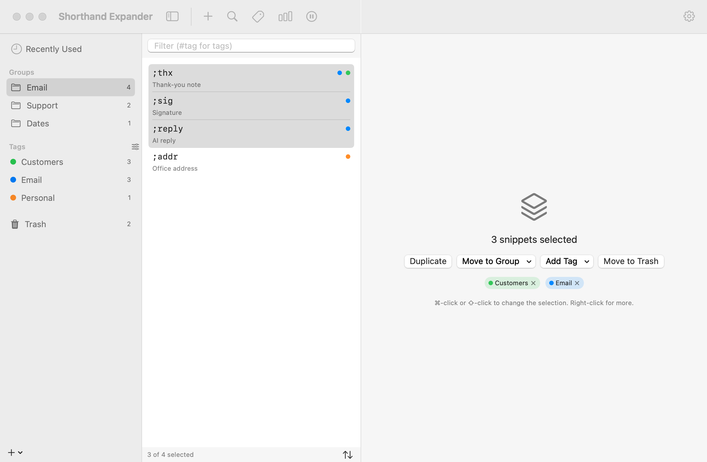
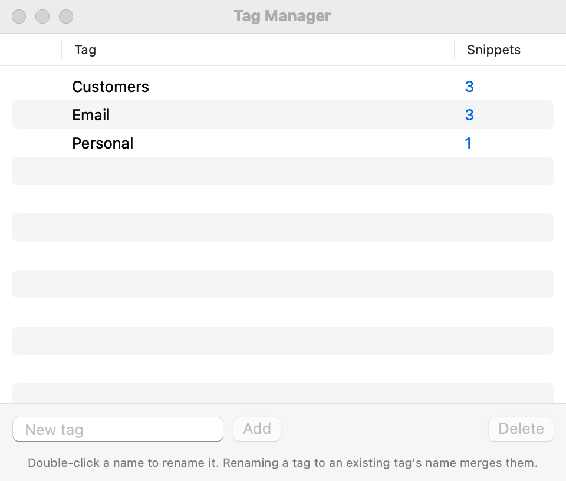
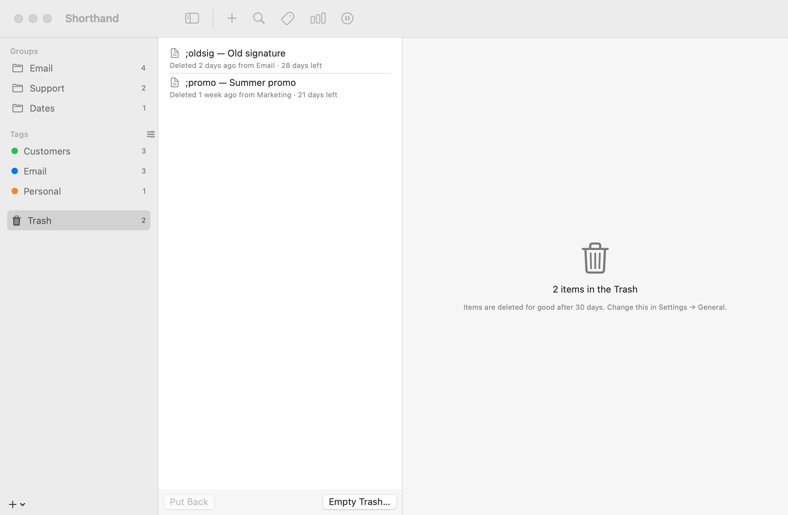

Tags, Trash & Multi-Select
Work on many snippets at once, label them with tags across groups, and get back anything you delete from the Trash.
The sidebar
The main window’s sidebar has three sections: Groups, Tags, and Trash. Each group and tag shows how many snippets it has.

The + button below the sidebar offers New Group, New Tag… and Import Snippets….
Selecting several snippets
- ⌘-click snippets in the list to add or remove them one at a time.
- ⇧-click to select everything between the first snippet and the one you click.
- Click in the list and press ⌘A (Edit ▸ Select All) to select every snippet shown.
The bottom of the list shows, for example, “3 of 12 selected”.
The multi-selection pane
With more than one snippet selected, the right-hand pane shows “N snippets selected” and these buttons, which act on all of them:
- Duplicate
- Makes a copy of each snippet, right after the original.
- Move to Group
- Moves them all into the group you choose.
- Add Tag
- Adds an existing tag, or a new one with New Tag….
- Move to Trash
- Moves them all to the Trash.
Below the buttons, the tags used by the selected snippets appear as small chips. Click the × on a chip to remove that tag from all of them.
Right-click actions
Right-click a snippet, or any snippet in a selection, for these actions. With several selected, the names include the number, such as Duplicate 3 Snippets.
- Duplicate
- Copies each snippet into the same group. The copy’s abbreviation gets the first free number added (
;sigbecomes;sig1, or;sig2if;sig1is taken), and its label gets “copy” added. - Move to Group
- Choose a group, or New Group… to make a new group and move the snippets into it in one step.
- Tags
- Lists every tag. A check mark means all the selected snippets have it: choose it to remove it from them all. Choose a tag without a check mark to add it to them all. New Tag… creates a tag and adds it; Tag Manager… opens the Tag Manager.
- Move to Trash
- Moves the snippets to the Trash. Pressing ⌫ does the same.
Dragging snippets
Drag a snippet (or any snippet in a selection, to drag them all) onto:
- a group to move them into it;
- a tag to add that tag to them (they stay in their groups);
- the Trash to delete them.
Selecting several groups
⌘-click or ⇧-click groups in the sidebar. Their snippets are listed together in the middle column, each with its group’s name underneath. The right-hand pane shows how many groups and snippets are selected, with Duplicate and Move to Trash buttons.
Right-click a group, or a selection of groups, for:
| Item | What it does |
|---|---|
| Duplicate Group | Makes a copy named “… copy”. Copies start disabled: the copy has exactly the same abbreviations as the original, so if both were on, the same abbreviation would belong to two snippets. Change the copy’s abbreviations, or turn off the original, before you turn the copy on. |
| Export Group… | Saves the group as a .textexpander file. Only when one group is selected. |
| Disable Group / Enable Group | Turns all the selected groups off, or on again if any are already off. |
| Merge N Groups into One | Asks first, then moves every snippet into the selected group that is highest in the sidebar. That group keeps its name and settings; the others are removed. Only when two or more groups are selected. See Merging groups below. |
| Move Group to Trash | Asks first, then moves the groups and all their snippets to the Trash. Pressing ⌫ in the sidebar does the same. |
Merging groups
Merging doesn’t change where your snippets work:
- A snippet whose Expand in is Same as group takes on the app rule of the group it came from, if that differs from the group it’s merged into. Snippets with their own rule keep it.
- Snippets from a disabled group stay off: they’re set to No Applications. Change that in each snippet’s Expand in when you want them on.
Changed your mind? Press ⌘Z (Edit ▸ Undo Merge Groups). See Undoing changes.
Tune Up Library
Choose File ▸ Tune Up Library… to find:
- Abbreviations that get in each other’s way: the same abbreviation twice, or one that expands before you can finish typing a longer one (for example
;adand;addrwhen snippets expand immediately). - Exact duplicates and snippets that are nearly the same.
- Never used: no expansions recorded, and created over a year ago.
- Empty snippets.
Click an abbreviation to open it in the main window, or move snippets to the Trash right there (you can undo it, and the Trash keeps them for a while). Tune Up runs on your Mac; nothing is sent anywhere.
Tags
Tags label snippets across groups. A snippet can have any number of tags, and a tag can be on snippets in any group. Unlike groups, tags don’t change how snippets expand; they just help you find and organize them. Tag names ignore capitals: “Clients” and “clients” are the same tag.
To tag a snippet
- Select the snippet.
- In the Tags: row of the editor, type a tag name in Add tag and press Return. Or click the tag button at the end of the row to pick an existing tag.
Each tag appears as a chip in its color. Click the chip’s × to remove the tag. In the snippet list, a snippet shows up to three colored dots for its tags.
To tag several snippets at once, use the right-click Tags menu, the Add Tag button, or drag them onto a tag.
Tags in the sidebar
- Click a tag to list every snippet with that tag, from any group. Select several tags (or tags and groups) to list them all together.
- With a tag selected, New Snippet creates a snippet that already has that tag.
- Right-click a tag for Rename Tag…, Color, Delete Tag, and Tag Manager…. If you rename it to a tag that’s already in use, Shorthand Expander™ asks before merging the two.
Filtering by tag
The Filter field above the snippet list matches tags as well as abbreviations, labels, and content. Start with # to match tags only: #client shows snippets with a tag containing “client”.
The Search Snippets panel understands tags too: #email thanks finds snippets tagged “email” that also contain “thanks”.
The Tag Manager

Open it with Window ▸ Tag Manager (⇧⌘T), the tag button in the main window’s toolbar, or the small slider button next to the Tags heading in the sidebar. It lists every tag with its color and the number of snippets that use it.
- Rename: double-click a name, type the new one, and press Return. If you rename a tag to the name of a tag that already exists or is already on some snippets, Shorthand Expander asks whether to merge them: every snippet with the old tag gets the other tag instead.
- Color: click the colored dot and choose a color (Red, Orange, Yellow, Green, Mint, Teal, Blue, Indigo, Purple, Pink, or Gray).
- Merge several: select two or more tags (⌘-click), click Merge… and type the name to keep.
- Delete: select tags and click Delete. The tag is removed from every snippet; the snippets themselves are kept.
- Add a tag: type in New tag at the bottom and click Add. It appears in the sidebar and menus, ready to use.
- See its snippets: click the number in the Snippets column, or right-click and choose Show Snippets.
The Trash
Deleting a snippet or group moves it to the Trash at the bottom of the sidebar instead of removing it. Right after a delete, a notice appears with an Undo button for a few seconds. That button works only if nothing else in your library has changed since; otherwise it tells you to use the Trash. You can also press ⌘Z (see Undoing changes).

Click Trash to see what’s in it, newest first. Each item shows when it was deleted, which group it came from, and how long it has left, for example “Deleted 2 days ago from Email · 28 days left”. Select an item to see its content.
- Put Back
- Returns the item to the group it came from. If that group has since been deleted, the item goes to a group with the same name, and if there isn’t one, Shorthand Expander creates it. A deleted group comes back as a whole group. Use the button below the list, the button in the right-hand pane, or right-click.
- Delete Immediately
- Right-click an item to remove it for good.
- Empty Trash…
- Removes everything in the Trash, after asking. It’s below the Trash list, in the Trash’s right-click menu in the sidebar, and in Settings ▸ General ▸ Trash.
Pressing ⌫ while items in the Trash list are selected asks before deleting them permanently.
Emptying the Trash automatically
Items are deleted for good once they have been in the Trash for 30 days. To change that:
- Open Settings ▸ General.
- Under Trash, choose Delete items in the Trash after: 7 days, 14 days, 30 days, 60 days, 90 days, or Never (empty it yourself).
The same section shows how many items are in the Trash.
Deleting a suggestion from the Suggested Snippets group doesn’t go to the Trash: it tells Shorthand Expander not to suggest that phrase again. See Suggestions.
Even after the Trash is emptied, your automatic backups still have older copies of your library.
Undoing changes
Choose Edit ▸ Undo (⌘Z) in the main window to undo the last change to your library, and Edit ▸ Redo (⇧⌘Z) to do it again. The menu names what it will undo, such as Undo Move Snippets, Undo Add Tag, Undo Merge Groups, Undo Put Back, or Undo Empty Trash.
You can undo:
- moving and duplicating snippets, and duplicating groups;
- moving snippets and groups to the Trash, Put Back, Delete Immediately, and Empty Trash;
- adding, removing, renaming, and deleting tags, creating a tag, and changing a tag’s color;
- enabling and disabling groups from the right-click menu;
- merging groups.
Shorthand Expander remembers up to 50 steps.
Text you type in the snippet editor has its own undo: while you’re typing there, ⌘Z undoes your typing. Click in the snippet list or the sidebar first to undo library changes.
The undo history starts again when you edit a snippet’s text or a group’s settings, create a snippet or group, reorder groups, import snippets, restore a backup, switch the sync folder, or when the library reloads from your sync folder. ⌘Z never rolls those back; for them, use the Trash or a backup.